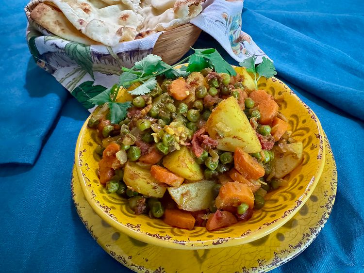

Home
Indian Mixed Vegeterian Curry

A completed Indian Mixed Veg Curry
Indian Mixed Veg Curry with variety of vegetables and spices.
Ingredients
- 3 tablespoons ghee or clarified butter
- onion, garlic, ginger tomato, carrots, green peas
- turmeric, coriander, cumin
Steps
- Step 1
Heat ghee in a large, nonstick pan over medium heat. Add onion
and cook, stirring, until lightly brown, about 8 minutes. Add
garlic and ginger and cook, stirring, until fragrant, about 1 minute.
- Step 2
Add tomato, serrano pepper, carrots, peas, potato, turmeric,
coriander, cumin, fenugreek, chili powder, and salt, and cook,
stirring, for about 5 minutes.
- Step 3
Reduce heat to low, cover, and let vegetables steam in their
own juices until potatoes are fork tender, about 25 minutes. Stir
about halfway through cooking time, and make sure the pan isn't too dry.
If vegetables are sticking, add 1 or 2 tablespoons water, replace
the lid, and continue cooking. Taste; season with salt.
- Step 4
Garnish with chopped cilantro. Serve warm, with naan, or similar flatbread.